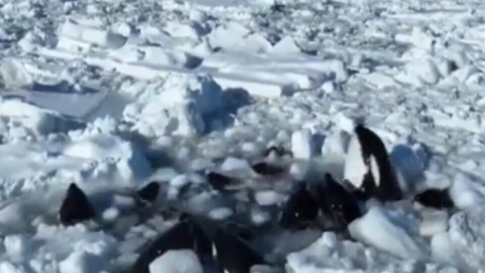
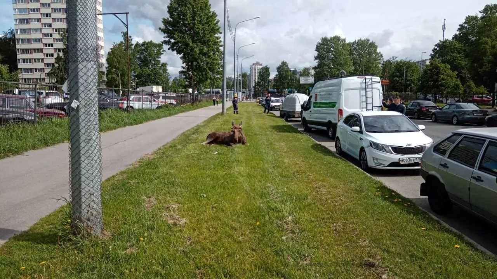
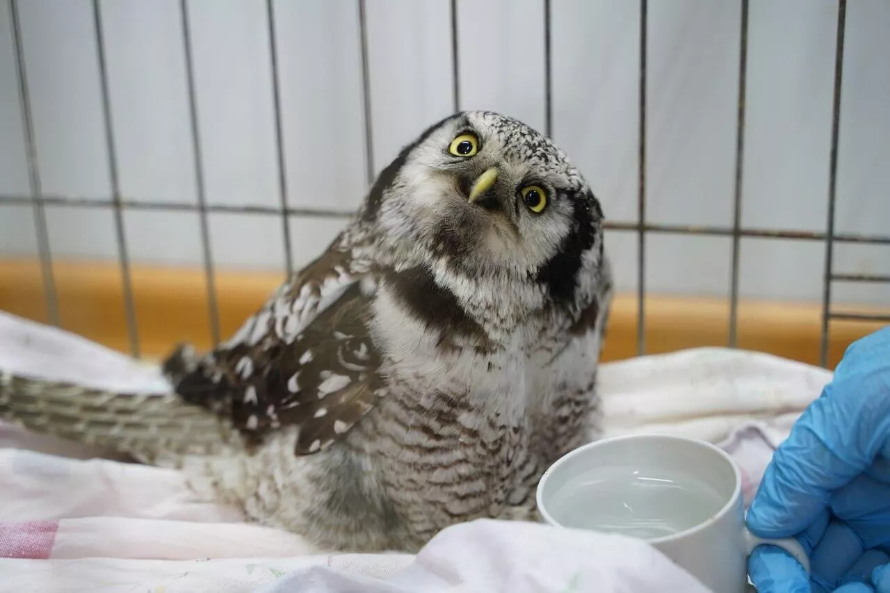

Косатки, попавшие в "ледяной плен" у японского Хоккайдо, внезапно пропали.
Как сообщили в правительстве острова, стая могла уплыть, воспользовавшись тем, что лед немного оттаял.

@ Фото: yomiuri.co.jp
О том, что стая морских животных застряла между дрейфующими льдами у Хоккайдо, стало известно 6 февраля 2024 года.
Местные жители с помощью дронов сняли на видео, как косатки борются за жизнь, поддерживая открытую полынью.
По мнению ряда биологов, этот вид в Японии не водится, поэтому животных, вероятно, занесло течением из России.
Эксперты предупредили, что в таком состоянии китообразные долго не протянут.
Однако японские власти не спешили разрешить эту ситуацию и ничего не стали предпринимать для спасения касаток.
Источник: kp.ru
В Петербурге спасли лося, которого сбил автомобиль

@ Фото: Официальный телеграм-канал Комитета по природопользованию (Петербург)
С.-ПЕТЕРБУРГ, 30 мая — РИА Новости. Петербургские специалисты помогли лосю, которого сбил автомобиль, сообщил в Telegram-канале городской комитет по природопользованию, охране окружающей среды и обеспечению экологической безопасности.
Рано утром лось попал под машину каршеринга в Калининском районе. "Животное было напугано и дезориентировано. По сигналу в дежурную службу комитета по природопользованию на место отправились специалисты. Животное осмотрел ветеринар, далее лося доставят в Центр диких животных "Велес", — говорится в публикации.
Специалисты напоминают, что при встрече с диким животным нельзя к нему приближаться, а на дороге нужно снизить скорость или остановиться и дать лосю перейти.
"Как и любое дикое животное, лось может представлять опасность для людей. Не стоит беспокоить животное, тем более пытаться его накормить. Особо осторожными надо быть автомобилистам. Соблюдение основополагающих принципов безопасности, скоростного режима поможет сохранить численность животных и не подвергать опасности собственную жизнь", — сказал начальник отдела по охране животного мира и особо охраняемых природных территорий Николай Ахматович.
В комитете отмечают, что сейчас у лосей продолжается весенний гон: молодые лоси ведут себя активно, совершают длительные переходы, пересекают автодороги и выходят на территорию городской застройки. Такая активность продлится до начала июля.
Рано утром лось попал под машину каршеринга в Калининском районе. "Животное было напугано и дезориентировано. По сигналу в дежурную службу комитета по природопользованию на место отправились специалисты. Животное осмотрел ветеринар, далее лося доставят в Центр диких животных "Велес", — говорится в публикации.
Специалисты напоминают, что при встрече с диким животным нельзя к нему приближаться, а на дороге нужно снизить скорость или остановиться и дать лосю перейти.
"Как и любое дикое животное, лось может представлять опасность для людей. Не стоит беспокоить животное, тем более пытаться его накормить. Особо осторожными надо быть автомобилистам. Соблюдение основополагающих принципов безопасности, скоростного режима поможет сохранить численность животных и не подвергать опасности собственную жизнь", — сказал начальник отдела по охране животного мира и особо охраняемых природных территорий Николай Ахматович.
В комитете отмечают, что сейчас у лосей продолжается весенний гон: молодые лоси ведут себя активно, совершают длительные переходы, пересекают автодороги и выходят на территорию городской застройки. Такая активность продлится до начала июля.
Источник: ria.ru
На Ямале спасли замерзшую сову

@ Фото: Департамент природных ресурсов ЯНАО
ЕКАТЕРИНБУРГ, 25 мая — РИА Новости. В селе Яр-Сале на Ямале спасли замерзшую годовалую сову, сообщил региональный департамент природных ресурсов.
Особь ястребиной совы заметили прохожие под припаркованным автомобилем. Годовалая птица была слаба и примерзла ко льду, ее доставили в приют для животных "Друг", где нового постояльца осмотрели специалисты центра ветеринарии.
"У нее переохлаждение, перья на одном крыле были немного приморожены. Сейчас птица чувствует себя удовлетворительно. Отогревшись, стала показывать характер, вырываться из рук", — рассказал начальник территориального отдела службы по охране, контролю и регулированию использования биоресурсов Юрий Краснобаев.
Когда хищник окрепнет, его выпустят на свободу, "подальше от поселка", добавили в департаменте.
Особь ястребиной совы заметили прохожие под припаркованным автомобилем. Годовалая птица была слаба и примерзла ко льду, ее доставили в приют для животных "Друг", где нового постояльца осмотрели специалисты центра ветеринарии.
"У нее переохлаждение, перья на одном крыле были немного приморожены. Сейчас птица чувствует себя удовлетворительно. Отогревшись, стала показывать характер, вырываться из рук", — рассказал начальник территориального отдела службы по охране, контролю и регулированию использования биоресурсов Юрий Краснобаев.
Когда хищник окрепнет, его выпустят на свободу, "подальше от поселка", добавили в департаменте.
Источник: ria.ru